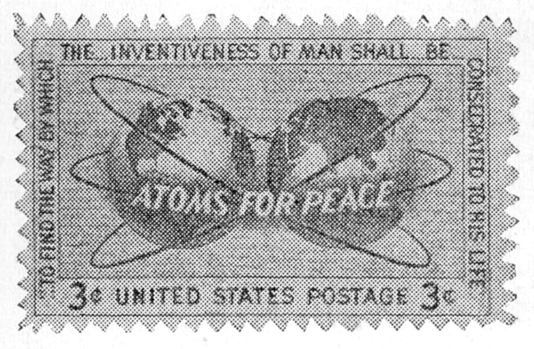

この頃アメリカでは、原子力平和利用の切手を賣っている。米大陸を見せた地球の一面と、歐亞大陸の面と、二つの地球を並べて、これを原子核に見立て、電子軌道の形の輪でつつんだ圖柄である。この構圖は、この種の切手としては、秀逸である。

原子力の切手（原物は青色刷）
「原子を平和へ」という標語が眞ん中にあり、周圍には、人間の創造力は、人生に捧げられるべきである、という意味の言葉がつけ加えてある。これはそう巧くないが、アメリカ人は、この種の標語がなかなか巧く、それが異人種雜居のこの國の世論をまとめるのに、一役買うことがよくある。
今さら言っても仕樣のない話であるが、今度の大戰の直前、アメリカの世論は、日本との戰爭に、決して向いていなかった。ところが眞珠灣の奇襲が發火點になり、すかさずアメリカ政府は「眞珠灣を忘れるな」という標語（リメムバー・パール・ハーバー）でもって、國内の世論を、完全に戰爭一本にまとめたのだそうである。この標語は、切手の消印に、戰後大分あとまで使われていた。
話はもとに戻るが、こういう原子力平和利用へ切手まで出していることは、アメリカ政府が、今度の原子力提案に、相當本腰を入れている證據とも見られる。日本政府は、國内の「紐附き」論に惱まされているが、米國政府にもまた惱みがある。それは國民の多大な税金を使った研究および資材を、外國へ無料でやるのは怪しからんという國民の聲を、抑えねばならないからである。
民主主義の國というものは、厄介なもので、何でも一々國民に知らせて、その納得が得られないと、ことが行われない。それでこういう切手などを出して、原子力は平和目的に使用しなければならないと、國民に宣傳をしているのであろう。
もっとも事柄自身は良いことなので、新聞なども、大いに政府の肩をもっているらしい。漫畫にも、ちょいちょいそういうのが出る。勞働者が鐵板を熔接している畫には「原子力を平和に」という火花が散っている。その傍に、西洋風な鬼がしゃがんでいて、横に「原子力」と書いた刀の鞘だけが捨ててある。まあこういった風な、きわめて原始的な漫畫である。しかしそれでも、言おうとしていることはよく分る。
最近の科學の進歩は、アメリカと限らず、世界の主な科學國では、その速度が非常に大きい。原子力の平和利用も、これ等の國々が、本腰を入れたら、案外早いうちに、實用になるかもしれない。